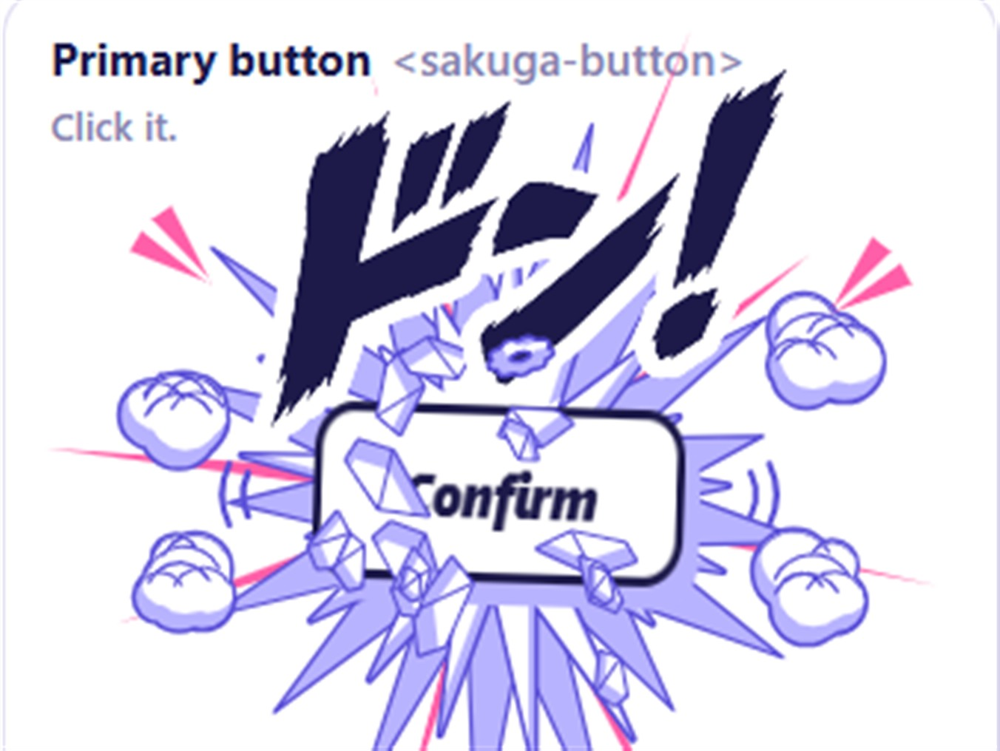

Widgets.
One cabinet for interactive bits that do not need a world around them: controls, effects, toys and interface studies, each shipped as its own folder with its own files.
A parallel shelf to Games, kept separate from the interface and library collections.

01
Sakuga VFX
Twelve ordinary UI controls that react like anime: springs, squash, smoke bursts, slashes and manga sound-effect lettering. One file each, no dependencies.